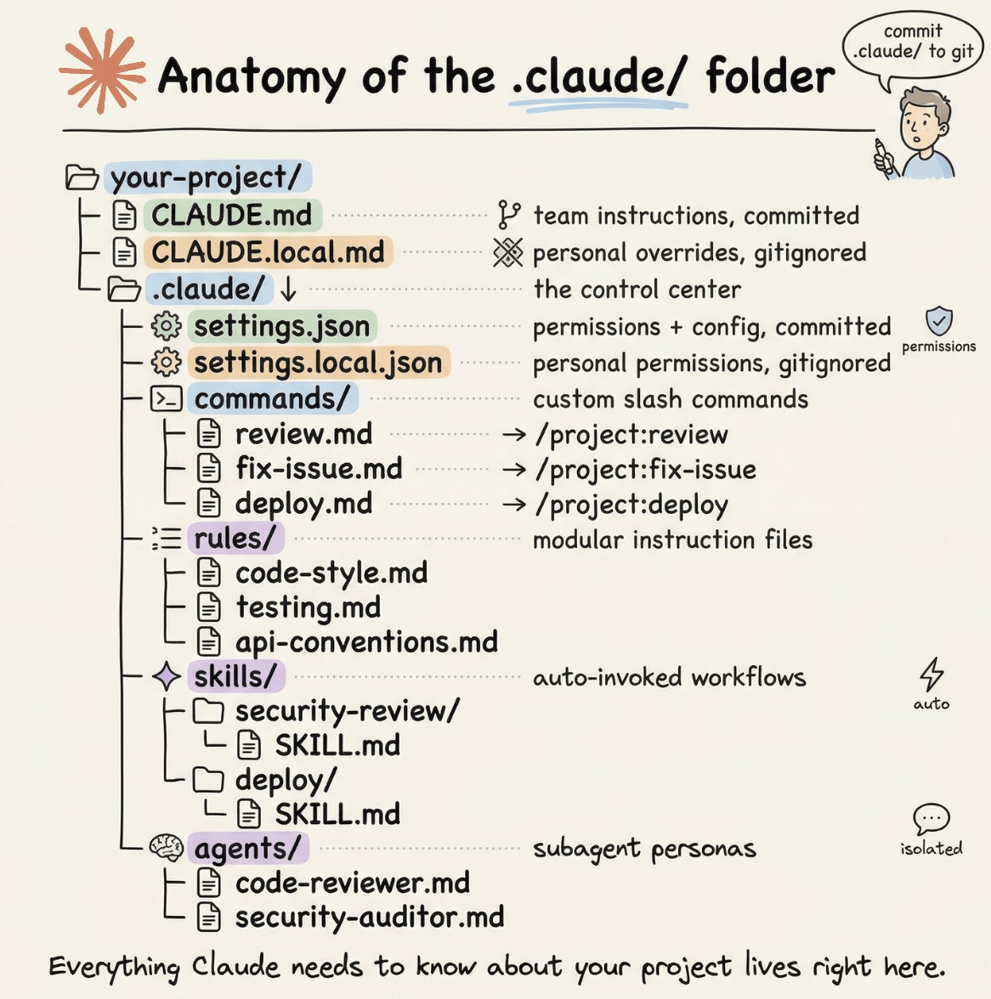

Anatomy of the .claude/ Folder
The .claude/ folder is the control center for how Claude behaves in your project. Every file inside has a specific purpose — this page maps out what lives where and why.
The Full Picture Beginner
Here's everything that can live inside .claude/ — most projects only use a few of these at first:

The complete .claude/ folder structure. Start with CLAUDE.md and settings.json — add the rest as you need them.
Project vs. Global Beginner
There are actually two .claude/ directories — one for your project, one for you personally:
.jpg)
Project config is committed to git and shared with your team. Global config is yours alone and loads in every session.
How CLAUDE.md Loads Beginner
CLAUDE.md is the most important file — it's Claude's instruction manual, loaded at the start of every session. Multiple files can exist at different levels; higher-specificity files win.
.jpg)
Files load in priority order into the system prompt. More specific locations override broader ones.
Files longer than ~200 lines start eating too much context, and Claude's instruction adherence drops. Use .claude/rules/ for extra instructions that only load when relevant.
The commands/ Folder Beginner
Every .md file you drop in .claude/commands/ becomes a slash command. The file's content becomes the prompt — and you can embed live shell output with !`command` syntax.
.jpg)
A review.md file becomes /project:review. The ! syntax runs shell commands and injects their output directly into the prompt.
.claude/commands/
├── review.md → /project:review
├── fix-issue.md → /project:fix-issue
└── deploy.md → /project:deployCommands in .claude/commands/ are shared with your team. Put commands in ~/.claude/commands/ for personal ones available across all projects — they show up as /user:command-name.
Commands vs. Skills Intermediate
Commands and skills look similar but trigger differently. The key distinction:
.jpg)
Commands require you to type a slash command. Skills watch the conversation and invoke themselves when the task matches.
| Feature | Commands (commands/) |
Skills (skills/) |
|---|---|---|
| Trigger | You type /project:name |
Claude recognizes the task automatically |
| Structure | Single .md file |
Subdirectory with SKILL.md + supporting files |
| Best for | Explicit, repeatable workflows you kick off | Specialized workflows Claude should invoke proactively |
| Shell output | Yes, via !`command` |
Yes, via !`command` |
The agents/ Folder Advanced
For complex tasks, Claude can spawn specialized subagents — each with its own context window, tool restrictions, and system prompt. The main agent delegates and waits for compressed results.
.jpg)
Subagents run in isolated context windows. The main agent only sees their final compressed output — keeping your main session clean.
Each agent is a .md file in .claude/agents/ with a YAML frontmatter block:
---
name: code-reviewer
description: Expert code reviewer. Use PROACTIVELY when reviewing PRs or validating implementations before merging.
model: sonnet
tools: Read, Grep, Glob
---
You are a senior code reviewer focused on correctness and maintainability.
- Flag bugs, not just style issues
- Suggest specific fixes, not vague improvements
- Check edge cases and error handlingThe tools field limits what the agent can do. A security auditor only needs Read, Grep, Glob — it has no business writing files. Use model: haiku for focused read-only tasks to save cost.
settings.json — Permissions Intermediate
.claude/settings.json controls what Claude is and isn't allowed to do without asking. Use an allow list for safe operations, a deny list for hard blocks.
{
"$schema": "https://json.schemastore.org/claude-code-settings.json",
"permissions": {
"allow": [
"Bash(npm run *)",
"Bash(git status)",
"Bash(git diff *)",
"Read", "Write", "Edit"
],
"deny": [
"Bash(rm -rf *)",
"Bash(curl *)",
"Read(./.env)",
"Read(./.env.*)"
]
}
}Anything not in either list causes Claude to ask before proceeding. Use settings.local.json for personal permission overrides — it's auto-gitignored.
Quick Reference Beginner
Every file at a glance:
/project:name./memory.Run /init to generate a starter CLAUDE.md, then add .claude/settings.json with allow/deny rules for your stack. That covers 95% of projects. Add commands, rules, skills, and agents as you identify recurring workflows worth packaging up.